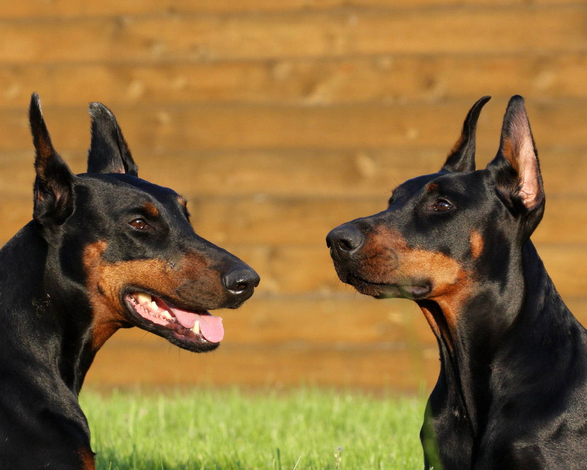
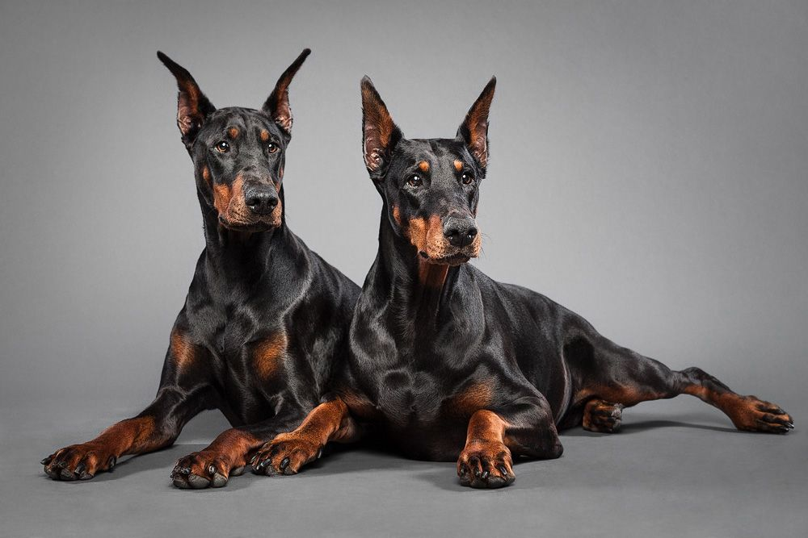
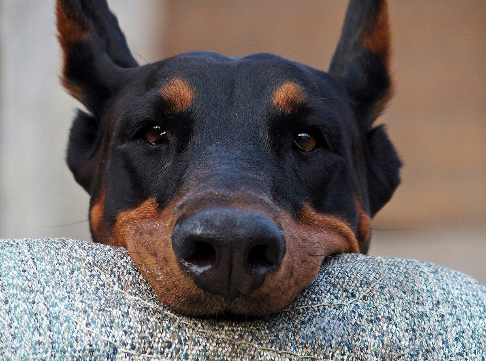

Доберман — это крупная собака мускулистого, но стройного телосложения, производящая впечатление собранного, динамичного, активного животного. В судейской выставочной оценке важную роль играет гармоничность сложения животного и чёткость линий силуэта.
Подробнее...
Доберманы отличаются активным, энергичным характером, склонны к проявлению агрессии. Обладают выраженным охранным инстинктом, как территориальным, так и направленным на охрану человека. При этом в семье, где живёт эта собака, доберманы доброжелательны и не агрессивны к домашним, включая детей. При правильной социализации эти собаки отличаются преданностью и послушанием по отношению ко всем членам семьи.
По отношению к другим видам животных доберманы не агрессивны и подходят для совместного содержания как с кошками, так и с другими питомцами. К представителям своего вида, с которыми они проживают на одной территории, эти собаки также не агрессивны.
Скрыть...
- 
- 
- 